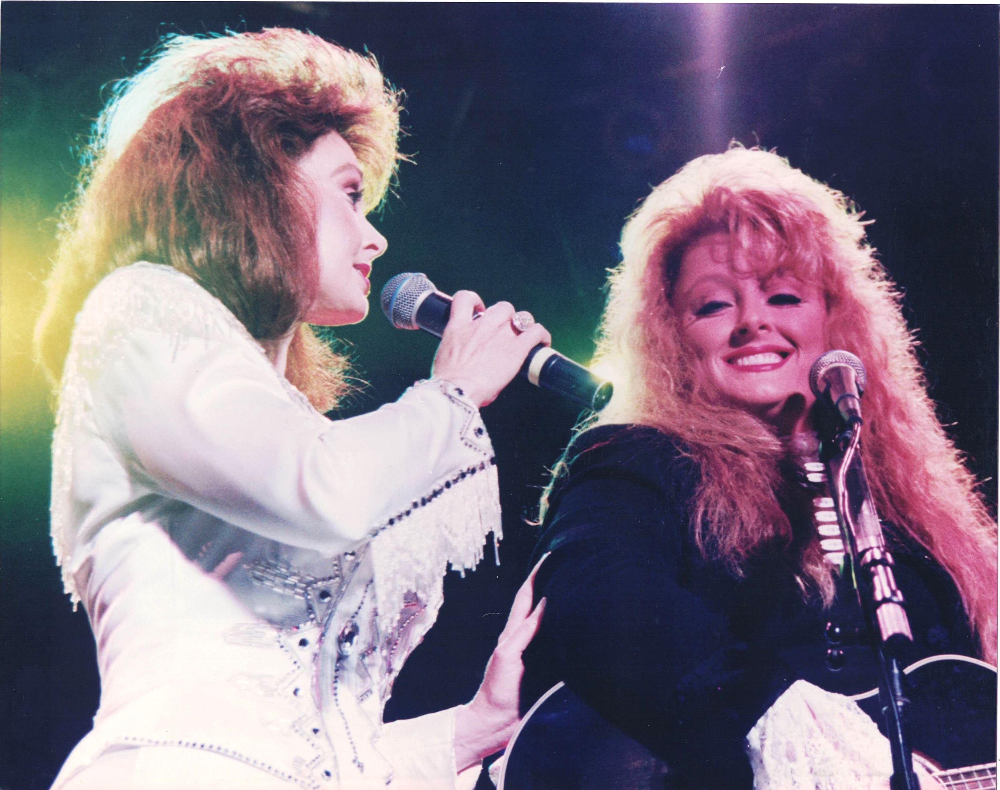

Product No. HEC-0054
$12.99
Shipping: $8.95
Description
8x10 color photograph
Full Description
The Judds were an American country music duo consisting of mother Naomi Judd (Deceased) and daughter Wynonna Judd. Formed in the early 1980s, The Judds became one of the most successful country acts of the decade, known for their close family harmonies, traditional country sound, and strong emotional songwriting. The duo achieved widespread success with hit songs including "Mama He's Crazy," "Why Not Me," "Grandpa (Tell Me 'Bout the Good Old Days)," "Love Is Alive," "Rockin' with the Rhythm of the Rain," and "Have Mercy." Their recordings earned multiple Grammy Awards, Country Music Association honors, and Academy of Country Music awards. The Judds released several successful albums, including "Why Not Me," "Rockin' with the Rhythm," "Heartland," and "River of Time." Their combination of country, bluegrass, folk, and acoustic influences helped define mainstream country music during the 1980s. The duo stopped performing regularly in 1991 after Naomi Judd was diagnosed with hepatitis C, although Naomi and Wynonna reunited periodically for concerts and television appearances. Wynonna continued with a successful solo country music career. Naomi Judd died in 2022 at age 76. The Judds were inducted into the Country Music Hall of Fame shortly afterward, recognizing their lasting influence on country music and their status as one of the genre's most celebrated family acts.
Condition
Excellent condition